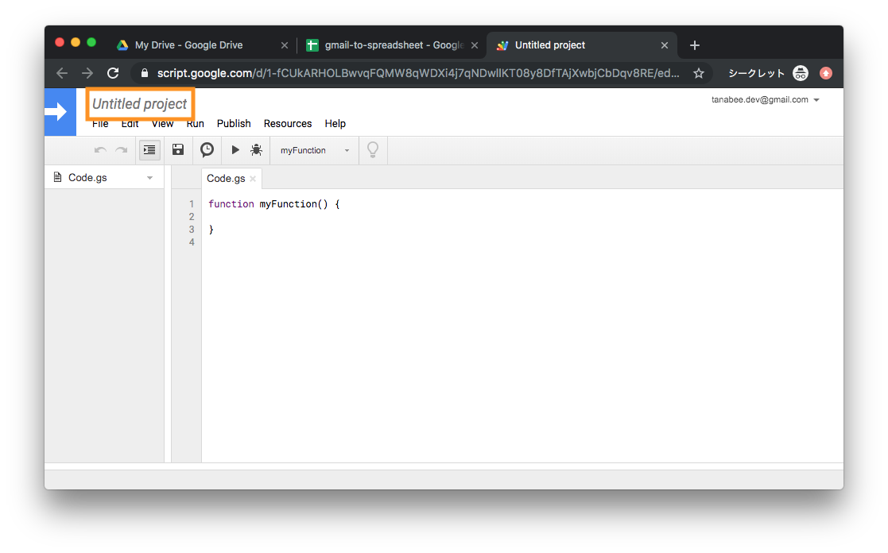
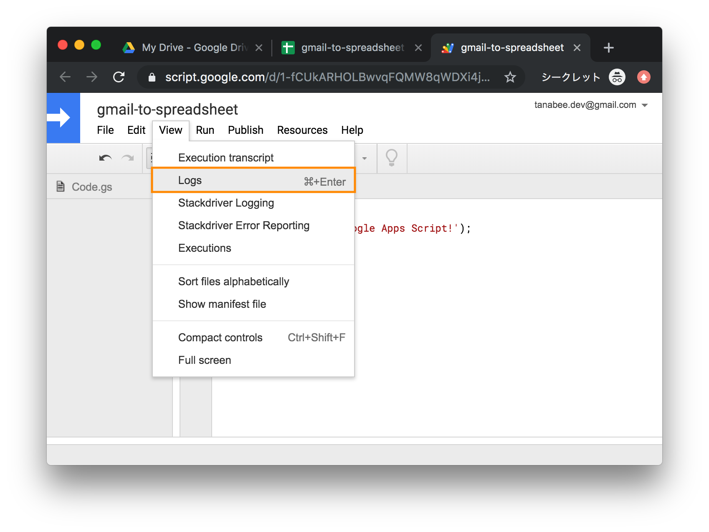
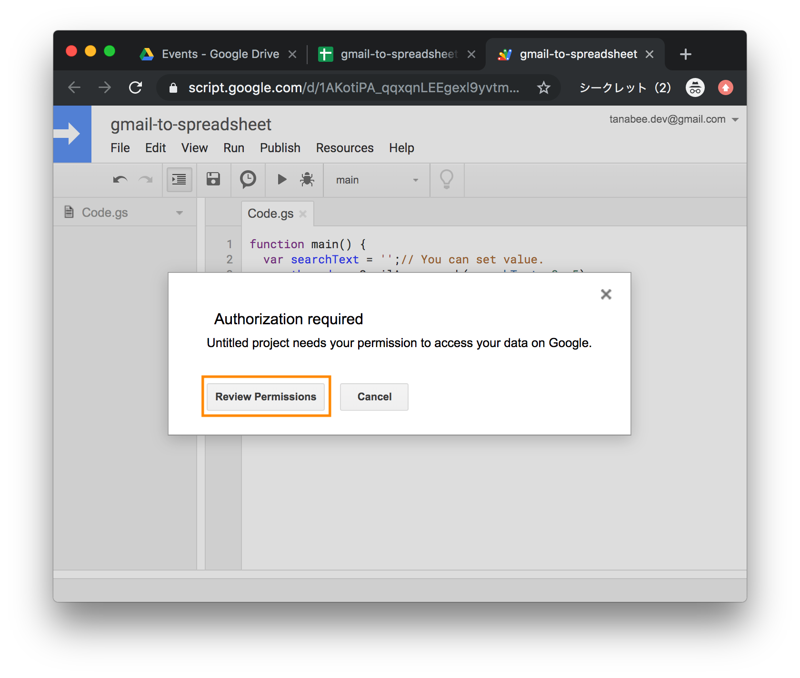
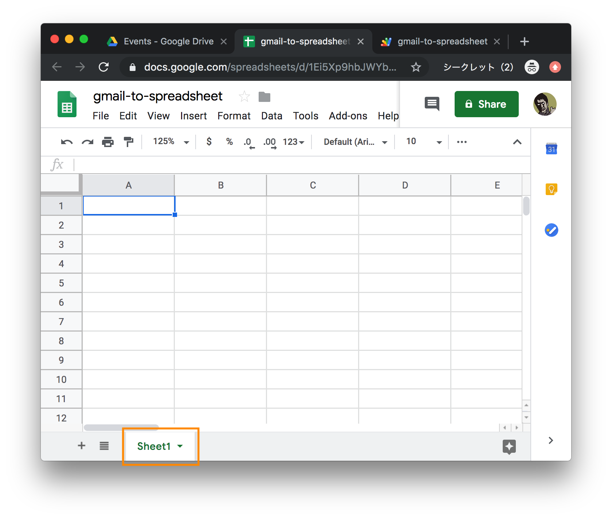
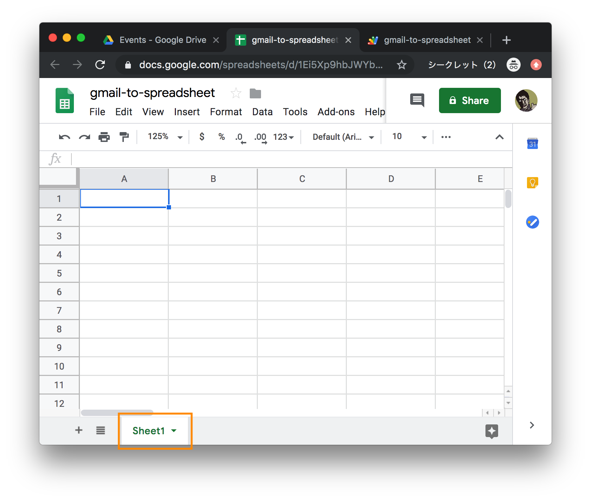
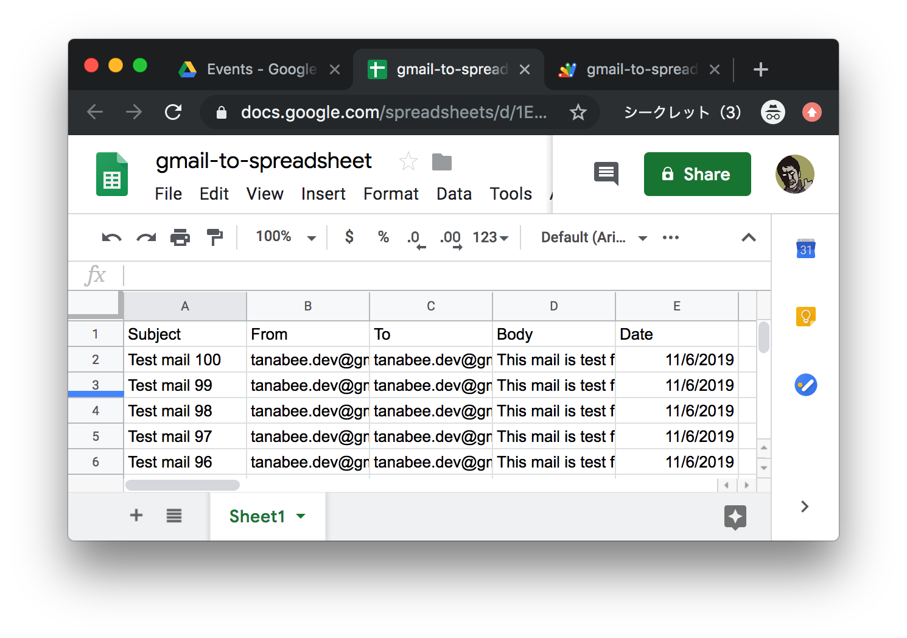
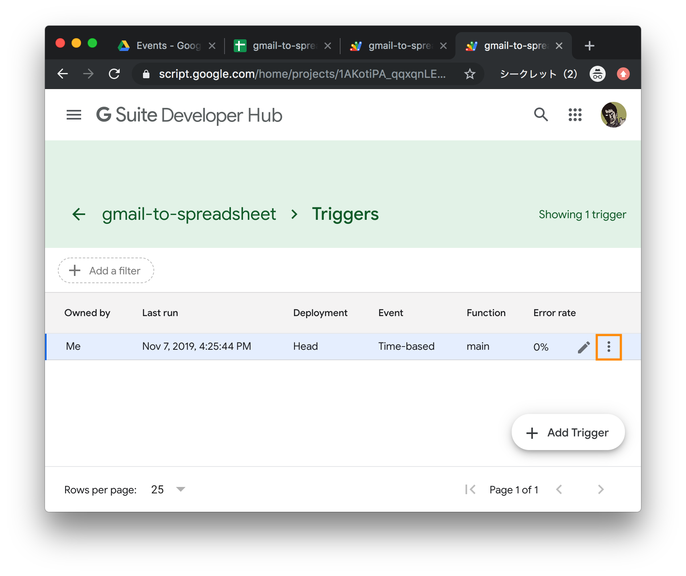

この Codelab では、 Google Apps Script を用いて Gmail のメッセージ一覧を Google Spreadsheet に抽出するアプリケーションを作成します。
対象者
- Google Apps Script 初心者
- JavaScript 経験者
ユースケース
この Codelab は以下のようなケースを想定しています。
- 特定のメーリス、もしくはメールアドレスへのユーザーからの問い合わせの集計、分析
- REST API は提供していないがメール通知機能を提供しているアプリケーションとのシステム連携
Gmail もしくは G Suite のアカウントが必要です。もしまだアカウントがない場合には Gmail アカウントを作成してください。
1. mail-to-me アプリケーションを開く
mail-to-me アプリケーションをブラウザで開く。
2. コピーを作成
File > Make a Copy を選択。
3. mail-to-me の実行
Run ボタンをクリック。
4. Gmail を確認
Gmail をブラウザで開き、メールが受信されていることを確認する。以上で準備は完了です。
Apps Script のプロジェクトを作成しましょう。まず drive.google.com にアクセスし、スプレッドシートファイルを作成します。
 New をクリック
New をクリック
 Google Sheets を選択するとスプレッドシートファイルが作成されます。
Google Sheets を選択するとスプレッドシートファイルが作成されます。

ファイル名を選択し、ファイル名（gmail-to-spreadsheet など）を入力します。
 Tools > Script editor メニューを選択すると Google Apps Script プロジェクトが作成されます。
Tools > Script editor メニューを選択すると Google Apps Script プロジェクトが作成されます。

プロジェクト名を選択し、プロジェクト名（gmail-to-spreadsheet など）を入力します。

プロジェクト名を入力して OK ボタンをクリックするとプロジェクトが保存されます。トーストが表示されてから、非表示になったところで保存が完了します。
これでスクリプトを実行できるようになりました。次のセクションでスクリプトを実行していきます。
下記のコードをコピーしてスクリプトエディタに貼り付けてください。その後 Run ボタンをクリックします。
function main() {
Logger.log('Hello Google Apps Script!');
}

Logger.log() 関数は Google Apps Script のログ出力関数です。
View > Logs を選択すると出力されたログを確認できます。

Hello Google Apps Script! と出力されているのが確認できました。
console.log() 関数を使うこともできますが、console.log() 関数を利用するためには別の設定が必要になるため、この Codelab では Logger.log() 関数を利用します。
次に、 GmailApp クラスを見てみます。GmailApp クラスとメソッドについては公式リファレンス から確認できます。GmailApp のドキュメントを見てみます。Gmail に関連するクラス (e.g. GmailMessage, GmailThread ) やメソッド (e.g. search, sendEmail) が確認できます。

今回は Gmail.search を使ってメール一覧を取得します。
ではスクリプトを実装していきます。Gmail.search メソッドを使って Gmail のスレッド一覧を取得します。
function main() {
var searchText = '';// You can set value.
var threads = GmailApp.search(searchText, 0, 5);
Logger.log(threads);
}
特定のメーリスなど、検索条件を設定したい場合には searchText に値を代入してください。公式サポートページに検索演算子についてまとめられています。
Run ボタンをクリックして実行します。

このスクリプトに Gmail の操作を認可するため、ポップアップが表示されます。Gmail リソースへのアクセスを認可する必要があります。 Review Permissions をクリックします。

この Codelab で使っているアカウントを選択します。


このアプリケーションを確認するために、 Advanced を選択し Go to ... と書かれたリンクをクリックします。もし、この画面が表示されない場合には、この手順はスキップしてください。

このアプリケーションに与える必要のあるスコープが表示されます。 Allow ボタンをクリック後、スクリプトエディタに戻ってスクリプトが実行されます。

ログを見てみましょう。GmailThread の配列が出力されています。たった 5 行のコードでメールの一覧を取得して出力することができました！この認可のポップアップのフローのために、通常実装するのが大変な認証周りのコードを書く必要がなくなるため、非常に簡単にアプリケーション連携ができるのです。
直前のセクションで Gmail のスレッド一覧を取得できました。今回はメッセージの件名、本文、送信元、送信先、日時を取得します。そのため、GmailThread からそれに紐づくメッセージを取得します。

Apps Script のリファレンスを見てみましょう。 GmailThread クラスには getMessages() メソッドが用意されており GmailMessage の配列を返します。 GmailMessage のリンクをクリックしてそのメソッドを確認しましょう。

GmailMessage クラスには getSubject, getBody, getFrom, getTo, getDate など多数の取得系メソッドが用意されています。 GmailThread.getMessages() を用いて求める値が取得できそうです。
今回はスレッド内の最初のメッセージを使います。メッセージを取得してログを見てみましょう。
function main() {
var searchText = '';
var threads = GmailApp.search(searchText, 0, 5);
threads.forEach(function (thread) {
var message = thread.getMessages()[0];
Logger.log(message);
});
}
 GmailMessage というテキストが表示されます。
GmailMessage というテキストが表示されます。
最後に、取得系のメソッドを叩いて値を取得します。
function main() {
var searchText = '';
var threads = GmailApp.search(searchText, 0, 5);
threads.forEach(function (thread) {
var message = thread.getMessages()[0];
Logger.log(message.getSubject());
Logger.log(message.getFrom());
Logger.log(message.getTo());
Logger.log(message.getPlainBody());
Logger.log(message.getDate());
});
}

スクリプトを実行してログを見てみます。Gmail メッセージの値を取得できました。次のセッションからは、これらの値を Spreadsheet に保存していきます。
// TODO: Graph: Spreadsheet > Sheet > Range
次に、 SpreadsheetApp クラスについて理解します。SpreadsheetApp reference にアクセスし、getActiveSheet のセクションを確認します。このメソッドを使うことで作成したスプレッドシートにアクセスすることができます。
下記のメソッドを実行します。Gmail の時と同様に認証の許可が必要です。
function saveMessages() {
Logger.log(SpreadsheetApp.getActiveSheet().getName());
}
 

ログビュアーでスプレッドシートのタブ名が表示されます。 Spreadsheet にデータを保存するためには Range クラスにアクセスしRange.setValues() を叩く必要があります。
function saveMessages() {
var data = [
['a', 'b', 'c'],
['d', 'e', 'f'],
];
SpreadsheetApp
.getActiveSheet()
.getRange("A1:C2")
.setValues(data);
}

saveMessages を実行し Spreadsheet を見てみると値が挿入されていることが確認できます。ここで引数に指定したデータが 2 次元配列であることに注意してください。
ここで、データを引数で渡せるように関数を編集します。今回は 5 つのタイプの値を保存するため、列 "E" は固定とします。
function saveMessages(data) {
SpreadsheetApp
.getActiveSheet()
.getRange("A1:E" + data.length)
.setValues(data);
}
外から叩くためのテストとして、 test 関数を実装し、実行してみます。
function test() {
var data = [
['a', 'b', 'c', 'd', 'e'],
['f', 'g', 'h', 'i', 'j'],
['A', 'B', 'C', 'D', 'E'],
['F', 'G', 'H', 'I', 'J'],
];
saveMessages(data);
}

無事に saveMessages 関数を叩けて Spreadsheet に値が挿入されました。テストできたので test 関数を削除します。次のセクションでは main 関数から saveMessages 関数を叩いて Gmail のメッセージ一覧を保存します。
saveMessages 関数を叩けるように main 関数を更新します。 messages の値を 2 次元配列になるようにします。
function main() {
var searchText = '';
var threads = GmailApp.search(searchText, 0, 5);
var messages = [];
threads.forEach(function (thread) {
var message = thread.getMessages()[0];
// single cell characters limit
if (message.getPlainBody().length > 50000) {
return;
}
messages.push([
message.getSubject(),
message.getFrom(),
message.getTo(),
message.getPlainBody(),
message.getDate(),
]);
});
saveMessages(messages);
}
function saveMessages(data) {
SpreadsheetApp
.getActiveSheet()
.getRange("A1:E" + data.length)
.setValues(data);
}
main 関数を実行し、Spreadsheet を確認します。

Spreadsheet で Gmail メッセージのデータを確認できました。それぞれの列が何を示すのか理解しやすくするために、最初の列に列名を指定します。コードの 4 行目で messages を定義している行を以下に書き換えて実行します。
var messages = [['Subject', 'From', 'To', 'Body', 'Date']];

列の意味がわかりやすくなりました。30 行に満たないコードで Gmail と Spreadsheet を連携するアプリケーションを作成することができました！
これまで作ったアプリケーションで十分要件を満たしますが、これをもっと使いやすくすることができます。 Spreadsheet にカスタムメニューを追加し、それを選択することで Gmail からメッセージ一覧を取得できるようにします。下記の onOpen 関数を追加し実行します。 onOpen という関数名は予約されており、Spreadsheet が開かれるタイミングで呼ばれます。詳しくは 公式ドキュメント で確認できます。
function onOpen() {
SpreadsheetApp
.getActiveSpreadsheet()
.addMenu('Gmail', [
{name: 'Fetch', functionName: 'main'},
]);
}

Spreadsheet を見てみましょう。カスタムメニューが表示されます。 Gmail > Fetch を選択します。
Spreadsheet の値をリセットできるとなおよいでしょう。 clearSheet 関数を追加してメニューに追加します。
function onOpen() {
SpreadsheetApp
.getActiveSpreadsheet()
.addMenu('Gmail', [
{name: 'Fetch', functionName: 'main'},
{name: 'Clear sheet', functionName: 'clearSheet'},
]);
}
function clearSheet() {
SpreadsheetApp
.getActiveSheet()
.clear();
}
Clear sheet サブメニューが追加されるので実行してみましょう。
Trigger を使って自動化の設定をすることも可能です。 Time-driven trigger を設定して main 関数を 1 分おきに実行してみましょう。
以下に沿って進めます。
 Edit > Current project's trigger を選択します
Edit > Current project's trigger を選択します
 Add Trigger を選択します
Add Trigger を選択します

ポップアップが表示されるので Trigger の設定を行います。上の画像の通り設定して Save ボタンを選択します。

トリガーが作成されました！ドットアイコンを選択します。
 Executions を選択します。
Executions を選択します。

main 関数が 1 分おきに実行されているのが確認できます。新しいメッセージを受信した際でも最新の状態を保つことができます。

ドットアイコン > Delete trigger を選択することで Trigger を削除できます。

Google Apps Script には様々な種類の Trigger が用意されています。 Trigger を使うことでプロジェクトをより便利にすることができます。
おめでとうございます！この Codelab は以上で終了です。最終的なコードは以下で確認できます。また tanabee/gas-codelab の GitHub にも上がっています。
function onOpen() {
SpreadsheetApp
.getActiveSpreadsheet()
.addMenu('Gmail', [
{name: 'Fetch', functionName: 'main'},
{name: 'Clear sheet', functionName: 'clearSheet'},
]);
}
function main() {
var searchText = '';
var threads = GmailApp.search(searchText, 0, 500);
var messages = [['Subject', 'From', 'To', 'Body', 'Date']];
threads.forEach(function (thread) {
var message = thread.getMessages()[0];
// single cell characters limit
if (message.getPlainBody().length > 50000) {
return;
}
messages.push([
message.getSubject(),
message.getFrom(),
message.getTo(),
message.getPlainBody(),
message.getDate(),
]);
});
saveMessages(messages);
}
function saveMessages(data) {
clearSheet();
SpreadsheetApp
.getActiveSheet()
.getRange("A1:E" + data.length)
.setValues(data);
}
function clearSheet() {
SpreadsheetApp
.getActiveSheet()
.clear();
}
Next Action
このプロジェクトをより便利にするアイデアを載せておきます。
- 500 件以上の Gmail メッセージの取得 (for 文を使って)
- Spreadsheet への保存を上書きでなく追加する形式にする
- フォームの送信結果など固定フォーマットの本文を解析して保存する
- Data Studio を使った見える化